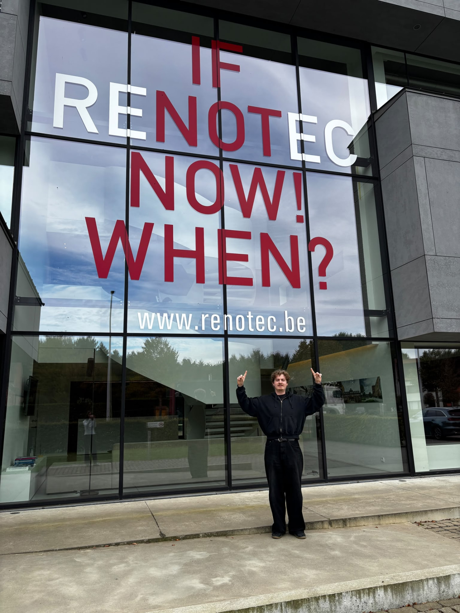

Wie ik ben
Eerlijk, behulpzaam en altijd meedenkend. Een technische mindset met een sterke creatieve drive.
Siebe Peeters
Geel, België
MCS · AP Hogeschool
Software development
Siebe Peeters — marketing × code
"Ik bouw verhalen die werken — strategisch denken, technisch maken, menselijk vertellen."
— PERSONAL STATEMENTEerlijk, behulpzaam en altijd meedenkend. Een technische mindset met een sterke creatieve drive.
Architectuur, statistieken, technologie en webdesign — alles wat structuur en schoonheid samenbrengt.
Probleemoplossend, ondersteunend en gefocust op detail. Visueel én functioneel.
AP Hogeschool · Antwerpen
STUDIEColruyt · klantgerichtheid, samenwerking, efficiëntie
WERKProgrammeren & probleemoplossend denken
ROOTSNederlands moedertaal · Engels vloeiend
Visuele content gemaakt volledig binnen de huisstijl van AP Hogeschool — social, campagne, consistent on-brand.
Volledige opzet van een fictief event: draaiboek, eigen website, communicatieplan en post-event analyses.
Fictief B2B aanbod uitgewerkt en gepromoot voor Basic-Fit — van propositie tot pitch en go-to-market.
Verhalen die mensen écht raken.
Nieuwsgierig naar elke nieuwe stack.
Visueel, scherp en on-brand.
Interfaces met karakter.
Complexiteit als puzzel.
Mijn verslag over mijn ervaringen tijdens werkplekleren.

Hier is het dan: de start van mijn WPL1-ervaring binnen Renotec. Direct vanaf de eerste dag werd ik hartelijk ontvangen door Shana en werd ik goed begeleid tot aan mijn mentor, die me direct naar de basis-IT-opleiding bracht. Dat stond ook op mijn planning voor de eerste dag. Dit was zeer boeiend, want het ging over de zwakke punten in cybersecurity, namelijk onszelf, en hoe geneigd we zijn om zomaar op links te klikken. Ook was er nog uitleg over alle interne software.
Op mijn tweede dag begon ik direct aan mijn one-pager en vulde ik de vragenlijst in met behulp van mijn mentor An. Daarna heeft An mij ook heel wat uitleg gegeven over mijn taken en wat er op de planning staat. De rest van de dag heb ik besteed aan het maken van een AI-agent die in de toekomst het invullen van meta-titels, beschrijvingen en alt-teksten voor SEO- en GEO-doeleinden moet vergemakkelijken. Dit is één van mijn grote taken voor de komende 7 weken.
Op mijn derde dag heb ik in de ochtend verder gewerkt aan mijn AI-agent en had ik daarna mijn eerste meeting over taken en de opkomende beurzen waar Renotec aanwezig zal zijn. Daar besefte ik dat er heel veel bij komt kijken. Daarna heb ik een contentpost ontworpen voor de nieuwe vacatures in Nederland en moest ik ook al brainstormen over leuke slogans voor de werfdoeken aan het nieuwe gebouw in Waalwijk, Nederland (vlakbij de Efteling).
En toen zat mijn eerste week stage er al op. Ik kijk zeker uit naar wat de komende weken gaan brengen, want de eerste week was al zeker boeiend en ik heb veel geleerd.
REFLECTIE WEEK 1"Mijn eerste week was alvast een boeiende start en ik kijk ernaar uit om de komende weken nog meer bij te leren bij Renotec."
Het verslag van week 2 verschijnt hier zodra het klaar is.
Het verslag van week 3 verschijnt hier zodra het klaar is.
Het verslag van week 4 verschijnt hier zodra het klaar is.
Het verslag van week 5 verschijnt hier zodra het klaar is.
Het verslag van week 6 verschijnt hier zodra het klaar is.
Het verslag van week 7 verschijnt hier zodra het klaar is.
Het WPL2-journaal en de weekverslagen verschijnen zodra het semester start.